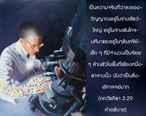

บางคนมองดูดวงวิญญาณว่าเป็นสิ่งอัศจรรย์ บางคนอธิบายดวงวิญญาณว่าเป็นสิ่งอัศจรรย์ และบางคนได้ยินเกี่ยวกับดวงวิญญาณว่าเป็นสิ่งอัศจรรย์ แต่ในขณะที่อีกหลายคนแม้หลังจากที่ได้ยินเกี่ยวกับดวงวิญญาณแล้วก็ยังไม่สามารถเข้าใจอะไรได้เลย

คีโตปนิษทฺ ส่วนใหญ่มีพื้นฐานบนหลักธรรมของ อุปนิษทฺ จึงไม่น่าแปลกใจที่ได้พบข้อความเช่นนี้ใน กฐ อุปนิษทฺ (1.2.7)
ศฺรวณยาปิ พหุภิรฺ โย น ลภฺยห์
ศฺฤณฺวนฺโต ’ปิ พหโว ยํ น วิทฺยุห์
อาศฺจโรฺย วกฺตา กุศโล ’สฺย ลพฺธา
อาศฺจโรฺย ’สฺย ชฺญาตา กุศลานุศิษฺฏห์
เป็นความจริงที่ว่าละอองวิญญาณอยู่ในร่างสัตว์ใหญ่ อยู่ในร่างต้นไทรมหึมา และอยู่ในจุลินทรีย์เล็กๆ ที่มีจำนวนเป็นร้อยๆ ล้านตัวในพื้นที่เพียงหนึ่งตารางนิ้ว ซึ่งนับว่าเป็นสิ่งน่าอัศจรรย์มาก มนุษย์ผู้เบาปัญญาและมนุษย์ผู้ที่ไม่เคร่งครัดจะไม่สามารถเข้าใจถึงความอัศจรรย์ของปัจเจกละอองวิญญาณได้แม้จะอธิบายโดยผู้ที่เชื่อถือได้มากที่สุดในวิชาความรู้นี้ก็ตาม ซึ่งถ่ายทอดบทเรียนให้แม้กระทั่งพระพรหม (พฺรหฺมา) ผู้เป็นชีวิตแรกในจักรวาล เนื่องจากแนวความคิดต่อสิ่งต่างๆ ทางวัตถุคนส่วนใหญ่ในยุคนี้จึงไม่สามารถจินตนาการได้ว่าประกายเล็กๆ เช่นนี้จะสามารถที่จะยิ่งใหญ่มากและเล็กมากได้อย่างไร ดังนั้น มนุษย์จึงมองดูดวงวิญญาณว่าเป็นสิ่งอัศจรรย์ไม่ว่าด้วยสถานภาพพื้นฐานหรือด้วยการอธิบาย ผู้คนมัวแต่หลงอยู่ในพลังงานวัตถุจึงหมกมุ่นอยู่กับเรื่องราวเพื่อสนองประสาทสัมผัสจนมีเวลาน้อยมากที่จะเข้าใจเกี่ยวกับตนเอง แม้จะเป็นความจริงที่ว่าหากไม่มีความเข้าใจตนเอง กิจกรรมทั้งหมดในการดิ้นรนเพื่อความอยู่รอดผลที่สุดคือ ความพ่ายแพ้ พวกเขาไม่มีความคิดว่าควรจะต้องคิดถึงดวงวิญญาณเพื่อแก้ปัญหาความทุกข์ทางวัตถุ
บางคนสนใจฟังเกี่ยวกับดวงวิญญาณ อาจไปรับฟังคำบรรยายร่วมกับหมู่คณะที่ดี แต่บางครั้งเนื่องจากอวิชชาถูกชักนำไปในทางที่ผิดโดยยอมรับว่าอภิวิญญาณและอนุวิญญาณเป็นหนึ่งเดียวกัน โดยไม่มีข้อแตกต่างในปริมาณ เป็นการยากมากที่จะพบบุคคลผู้เข้าใจสถานภาพของอภิวิญญาณและอนุวิญญาณ รวมทั้งหน้าที่และความสัมพันธ์ของทั้งสอง และรายละเอียดต่างๆ อย่างครบถ้วน และยากยิ่งไปกว่านี้คือการที่จะพบบุคคลผู้ได้รับประโยชน์อย่างสมบูรณ์จากความรู้แห่งดวงวิญญาณ และยังสามารถอธิบายถึงสถานภาพของดวงวิญญาณในแง่มุมต่างๆ ได้ อย่างไรก็ดี หากผู้ใดสามารถเข้าใจเรื่องราวของดวงวิญญาณชีวิตของผู้นั้นจะประสบความสำเร็จ
วิธีที่ง่ายที่สุดในการเข้าใจเรื่องความรู้แจ้งแห่งตนคือ การยอมรับคำสอนใน ภควัท-คีตา ที่ตรัสโดยองค์ศฺรีกฺฤษฺณ ผู้ที่เชื่อถือได้สูงสุด โดยไม่ถูกบิดเบือนจากทฤษฎีอื่นๆ แต่จำเป็นต้องมีความวิริยะและความเสียสละอย่างสูงไม่ว่าในชาตินี้หรือในอดีตชาติ ก่อนที่เราจะสามารถยอมรับว่าองค์กฺฤษฺณคือ บุคลิกภาพสูงสุดแห่งพระเจ้า อย่างไรก็ดี เราจะสามารถรู้จักองค์กฺฤษฺณว่าทรงเป็นองค์ภควานฺสูงสุดได้ก็ด้วยพระกรุณาธิคุณอย่างหาที่สุดมิได้ของสาวกผู้บริสุทธิ์ทางเดียวเท่านั้น